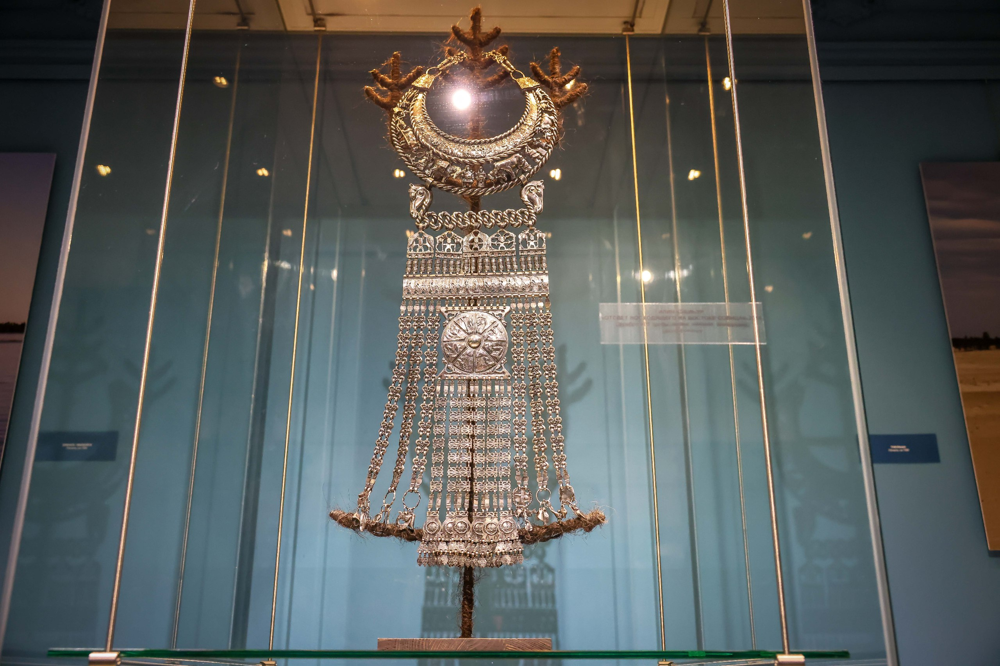
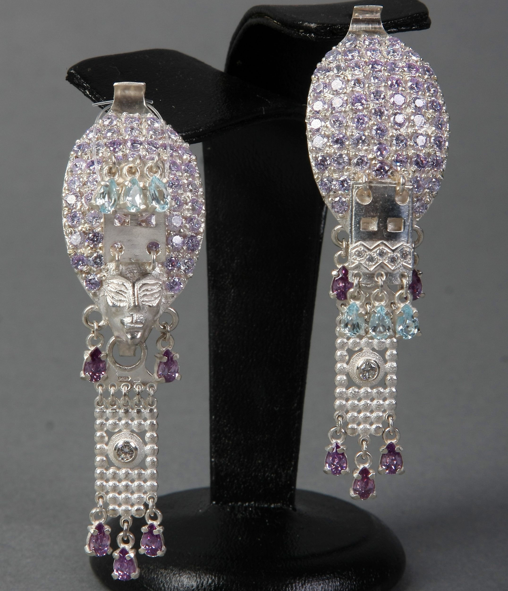

Alexander Manzhuriev: Arctic goggles
Alexander Manzhuriev: Arctic gogglesportrait of Alexander Manzhuriev by @look_lensk АЛЕКСАНДРА МАНЖУРЬЕВА: Arctic goggles - Charapchy "Ton Biis", 2024 (925 sterling silver, beads, black cubic zirconia, casting, embossing, inlay)
portrait of Alexander Manzhuriev by @look_lensk
Alexander Manzhuriev: Arctic goggles - (in Sakha language: Charapchy) "Ton Biis", 2024 (925 sterling silver, beads, black cubic zirconia, casting, embossing, inlay)
photo by Maria Vasilyeva АЛЕКСАНДРА МАНЖУРЬЕВА: Arctic goggles
photo by Maria Vasilyeva
photo by Maria Vasilyeva АЛЕКСАНДРА МАНЖУРЬЕВА: Arctic goggles
photo by Maria Vasilyeva

Alexander Manzhuriev: Chest necklace for Aan Alakhchin Khotun - the deity of our Middle Earth ILIN-KEBIHER, 2016, (Silver, weight 2 kg 270 grams, casting, chasing, engraving, oxidation)
photo by Maria Vasilyeva АЛЕКСАНДРА МАНЖУРЬЕВА: Chest necklace for Aan Alakhchin Khotun - the deity of our Middle Earth (Silver, weight 2 kg 270 grams)
photo by Maria Vasilyeva
photo by Maria Vasilyeva АЛЕКСАНДРА МАНЖУРЬЕВА: Chest necklace for Aan Alakhchin Khotun - the deity of our Middle Earth (Silver, weight 2 kg 270 grams)
photo by Maria Vasilyeva
A complex composition, in shape repeating the traditional women's breast decoration Ilin kebiher. But this is not a decoration, but a mythological model of the Universe, starting with a powerful twisted hryvnia, from which the inhabitants of the three worlds flow down - gods, people, animals, birds, fish. The supreme deity Yuryung Aar Toyon in the form of the Sun illuminates the blessed Middle World. A careful look will see everyday life scenes and familiar images from the Olonkho epic. The artist pays special attention to numerical symbolism - for the Yakuts, the numbers 3, 5, 7, 9 are sacred: three worlds of the Universe, five elements (water, fire, air, forests and mountains), seven arrows in a warrior’s quiver, eight Siberian Crane girls, nine heavenly tiers. A variety of silverworking techniques, ranging from fine engraving to powerful cast strands, create the illusion of pouring light and color.
 Alexander Manzhuriev: Chest necklace for Aan Alakhchin Khotun - the deity of our Middle Earth (Silver, weight 2 kg 270 grams)
Alexander Manzhuriev: Chest necklace for Aan Alakhchin Khotun - the deity of our Middle Earth (Silver, weight 2 kg 270 grams) photo by Maria Vasilyeva АЛЕКСАНДРА МАНЖУРЬЕВА: Chest necklace for Aan Alakhchin Khotun - the deity of our Middle Earth (Silver, weight 2 kg 270 grams)
photo by Maria Vasilyeva
 Alexander Manzhuriev: Chest necklace for Aan Alakhchin Khotun - the deity of our Middle Earth (Silver, weight 2 kg 270 grams)
Alexander Manzhuriev: Chest necklace for Aan Alakhchin Khotun - the deity of our Middle Earth (Silver, weight 2 kg 270 grams) photo by Maria Vasilyeva АЛЕКСАНДРА МАНЖУРЬЕВА: Chest necklace for Aan Alakhchin Khotun - the deity of our Middle Earth (Silver, weight 2 kg 270 grams)
photo by Maria Vasilyeva
Alexander Manzhuriev: Chest necklace for Aan Alakhchin Khotun - the deity of our Middle Earth (Silver, weight 2 kg 270 grams)
АЛЕКСАНДРА МАНЖУРЬЕВА: Chest necklace for Aan Alakhchin Khotun - the deity of our Middle Earth (Silver, weight 2 kg 270 grams)
 Alexander Manzhuriev: Chest necklace for Aan Alakhchin Khotun - the deity of our Middle Earth (Silver, weight 2 kg 270 grams)
АЛЕКСАНДРА МАНЖУРЬЕВА: Chest necklace for Aan Alakhchin Khotun - the deity of our Middle Earth (Silver, weight 2 kg 270 grams)
Alexander Manzhuriev: Chest necklace for Aan Alakhchin Khotun - the deity of our Middle Earth (Silver, weight 2 kg 270 grams)
АЛЕКСАНДРА МАНЖУРЬЕВА: Chest necklace for Aan Alakhchin Khotun - the deity of our Middle Earth (Silver, weight 2 kg 270 grams)
 Alexander Manzhuriev: Chest necklace for Aan Alakhchin Khotun - the deity of our Middle Earth (Silver, weight 2 kg 270 grams)
АЛЕКСАНДРА МАНЖУРЬЕВА: Chest necklace for Aan Alakhchin Khotun - the deity of our Middle Earth (Silver, weight 2 kg 270 grams)
Alexander Manzhuriev: Chest necklace for Aan Alakhchin Khotun - the deity of our Middle Earth (Silver, weight 2 kg 270 grams)
АЛЕКСАНДРА МАНЖУРЬЕВА: Chest necklace for Aan Alakhchin Khotun - the deity of our Middle Earth (Silver, weight 2 kg 270 grams)
 Alexander Manzhuriev: from jewelry collection "Singing Rings" "Uluu Khoro kyyha Kubaldiyya Kuo" and "Bere saga sorgulaah Betun Bootur" - This is the bride and groom: Bere Betung Bootur and his betrothed, daughter Uluu Horo Kubaldiyya Kuo, riding a bull (925 sterling silver, steel, spinel, zircon)
Alexander Manzhuriev: from jewelry collection "Singing Rings" "Uluu Khoro kyyha Kubaldiyya Kuo" and "Bere saga sorgulaah Betun Bootur" - This is the bride and groom: Bere Betung Bootur and his betrothed, daughter Uluu Horo Kubaldiyya Kuo, riding a bull (925 sterling silver, steel, spinel, zircon)The rings are unique small musical instruments (khomus) that can be played АЛЕКСАНДРА МАНЖУРЬЕВА: Singing of paired rings - This is the bride and groom: Bere Betung Bootur and his betrothed, daughter Uluu Horo Kubaldiyya Kuo, riding a bull (925 sterling silver, steel, spinel, zircon)
The rings are unique small musical instruments (khomus) that can be played
 Alexander Manzhuriev: Jewelry set made of gold and zircons (earrings, pendant, ring) in shape of sun
Alexander Manzhuriev: Jewelry set made of gold and zircons (earrings, pendant, ring) in shape of sunPhoto by Kunnei Takaahai АЛЕКСАНДРА МАНЖУРЬЕВА: Jewelry set made of gold and zircons (earrings, pendant, ring) in shape of sun
Photo by Kunnei Takaahai
 Alexander Manzhuriev: Earrings: Sakha woman in a high hat and breast decoration - Ilin Kebiher, 2008, (casting, chasing, inlay, 925 silver, garnet)
Alexander Manzhuriev: Earrings: Sakha woman in a high hat and breast decoration - Ilin Kebiher, 2008, (casting, chasing, inlay, 925 silver, garnet)
photo by Maria Vasilyeva АЛЕКСАНДРА МАНЖУРЬЕВА: Earrings
photo by Maria Vasilyeva

Alexander Manzhuriev: BRIDE, 2008 (casting, embossing, inlay, 925 silver, goal. topaz, zircons)
earrings for a bride wearing a high headdress. One of the earrings represents a bride with her face covered with a veil - annyah. On one earrring, the bride covers her face in the first days of the wedding, on the other, she reveals her face АЛЕКСАНДРА МАНЖУРЬЕВА: Earrings
earrings for a bride wearing a high headdress. One of the earrings represents a bride with her face covered with a veil - annyah. On one earrring, the bride covers her face in the first days of the wedding, on the other, she reveals her face АЛЕКСАНДРА МАНЖУРЬЕВА: Earrings
Alexander Manzhuriev: BILGE TOYON,
bull, small jewelry sculpture, 2009 (silver, duck bone)
The breast bone of the duck is made in the shape of a bull. In the old days, after eating a duck, the Yakuts looked at its chest part and predicted the weather from its pattern. What kind of summer will it be and what kind of autumn will it be? There will be drought or there will be rain. There was such a folk sign that still exists today. АЛЕКСАНДРА МАНЖУРЬЕВА: Bull - small jewelry sculpture (silver, duck bone)
 Alexander Manzhuriev: DREAM, Elk, small jewelry sculpture, 2012 (casting, embossing, bronze)
Alexander Manzhuriev: DREAM, Elk, small jewelry sculpture, 2012 (casting, embossing, bronze) In the north they say: “If a deer leaves a person, Happiness goes with the deer.” Deer is a sacred animal for the inhabitants of the north; it provides food, shelter and clothing. Without deer, nomadic peoples cannot survive in harsh conditions; it is an integral part of their life.
photograph by Maria Vasilyeva АЛЕКСАНДРА МАНЖУРЬЕВА: Elk - small jewelry sculpture (bronze)
photograph by Maria Vasilyeva
 Alexander Manzhuriev: The Flight, 2007 (silver, mammoth tusk, mahogany, walnut tree, casting, hammer, engraving, carving)
АЛЕКСАНДРА МАНЖУРЬЕВА: Sculpture (mammoth tusk, silver)
Alexander Manzhuriev: The Flight, 2007 (silver, mammoth tusk, mahogany, walnut tree, casting, hammer, engraving, carving)
АЛЕКСАНДРА МАНЖУРЬЕВА: Sculpture (mammoth tusk, silver)
 Alexander Manzhuriev: Letter Stone, 2024 (stone carving, reindeer antlers)
Alexander Manzhuriev: Letter Stone, 2024 (stone carving, reindeer antlers)photograph by Maria Vasilyeva АЛЕКСАНДРА МАНЖУРЬЕВА: Letter Stone, 2024 (stone carving, reindeer antlers)
photograph by Maria Vasilyeva
 Alexander Manzhuriev: NEST, 2011, (silver,casting, embossing, mahogany) It's haymaking time. The silence of the hot summer is interrupted only by the singing of a bird perched on the tip of a pitchfork. For traditional rural Sakha the time of heavy haymaking is coming, the time of preparation for a hard, long winter.
Alexander Manzhuriev: NEST, 2011, (silver,casting, embossing, mahogany) It's haymaking time. The silence of the hot summer is interrupted only by the singing of a bird perched on the tip of a pitchfork. For traditional rural Sakha the time of heavy haymaking is coming, the time of preparation for a hard, long winter.photograph by Maria Vasilyeva АЛЕКСАНДРА МАНЖУРЬЕВА: Sculpture, boy (Silver)
photograph by Maria Vasilyeva
Alexander Manzhuriev: KULUMEN-horsefly, 2009 (casting, chasing, engraving, inlay, gold 750, silver 925, diamonds, chrome diopsides, stone)
A warrior playing with a horsefly like one would in childhood
photograph by Maria Vasilyeva АЛЕКСАНДРА МАНЖУРЬЕВА: Kulumen, smallform sculpture (silver)
photograph by Maria Vasilyeva
A warrior playing with a horsefly like one would in childhood
photograph by Maria Vasilyeva АЛЕКСАНДРА МАНЖУРЬЕВА: Kulumen, smallform sculpture (silver)
photograph by Maria Vasilyeva
 Alexander Manzhuriev: Kulumen, smallform sculpture (silver)
АЛЕКСАНДРА МАНЖУРЬЕВА: Kulumen, smallform sculpture (silver)
Alexander Manzhuriev: Kulumen, smallform sculpture (silver)
АЛЕКСАНДРА МАНЖУРЬЕВА: Kulumen, smallform sculpture (silver)
 Alexander Manzhuriev: Yakut-Sakha national men's belt "Olokh," 2010 (925 sterling silver, leather, embossing, engraving)
Alexander Manzhuriev: Yakut-Sakha national men's belt "Olokh," 2010 (925 sterling silver, leather, embossing, engraving) photo by Maria Vasilyeva АЛЕКСАНДРА МАНЖУРЬЕВА: Traditional Sakha silver men's belt
photo by Maria Vasilyeva
 Alexander Manzhuriev: Traditional Sakha silver men's belt (detail)
Alexander Manzhuriev: Traditional Sakha silver men's belt (detail) photo by Maria Vasilyeva АЛЕКСАНДРА МАНЖУРЬЕВА: Traditional Sakha silver men's belt (detail)
photo by Maria Vasilyeva
Alexander Manzhuriev: Traditional Sakha silver men's belt (detail)
photo by Maria Vasilyeva АЛЕКСАНДРА МАНЖУРЬЕВА: Traditional Sakha silver men's belt (detail)
photo by Maria Vasilyeva
photo by Maria Vasilyeva АЛЕКСАНДРА МАНЖУРЬЕВА: Traditional Sakha silver men's belt (detail)
photo by Maria Vasilyeva
 Alexander Manzhuriev: BRIDE, 2009 (casting, chasing, carving, inlay, 925 silver, mammoth bone, mahogany)
Alexander Manzhuriev: BRIDE, 2009 (casting, chasing, carving, inlay, 925 silver, mammoth bone, mahogany)A girl sitting on a chest is waiting for her betrothed. According to ancient customs, the Yakut bride was not supposed to show her face to her father-in-law for 3 or 7 years, and in some cases - until her death. It was considered a great sin for a father-in-law to see his daughter-in-law's face. If it was impossible to avoid the meeting, then the young woman lowered the facial veil (veil) over her face. АЛЕКСАНДРА МАНЖУРЬЕВА: Bride sitting on dowry (small silver sculpture)
 Theatrical performance of the Sakha Theater “Tulaayakh okho” (2023) based on the novel “Deaf Vilyuy”(1983) by the Sakha writer Vasily Yakovlev (pseudonym Dalan) staged by the chief director of the Sakha Theatre Ruslan Tarakhovsky, where the stage set and costumes are inspired by the works of Manzhuriev.
Theatre performance inspired by small silver sculpture
Theatrical performance of the Sakha Theater “Tulaayakh okho” (2023) based on the novel “Deaf Vilyuy”(1983) by the Sakha writer Vasily Yakovlev (pseudonym Dalan) staged by the chief director of the Sakha Theatre Ruslan Tarakhovsky, where the stage set and costumes are inspired by the works of Manzhuriev.
Theatre performance inspired by small silver sculpture
 Alexander Manzhuriev: Bride sitting on dowry (small silver sculpture) (detail)
Alexander Manzhuriev: Bride sitting on dowry (small silver sculpture) (detail) photo by Maria Vasilyeva АЛЕКСАНДРА МАНЖУРЬЕВА: Bride sitting on dowry (small silver sculpture) (detail)
photo by Maria Vasilyeva
Alexander Manzhuriev: SHAMAN, 2009 (bronze with patina, mahogany)
The shaman, in the ecstasy of ritual, is transformed before our eyes. From the side, he is perceived as a formidable bird with an eagle’s beak, in the image of which he can penetrate into other worlds; on the other hand, he is a shaman beating a tambourine. АЛЕКСАНДРА МАНЖУРЬЕВА: Shaman (small bronze sculpture)
The shaman, in the ecstasy of ritual, is transformed before our eyes. From the side, he is perceived as a formidable bird with an eagle’s beak, in the image of which he can penetrate into other worlds; on the other hand, he is a shaman beating a tambourine. АЛЕКСАНДРА МАНЖУРЬЕВА: Shaman (small bronze sculpture)
Alexander Manzhuriev: Shaman (small bronze sculpture)
АЛЕКСАНДРА МАНЖУРЬЕВА: Shaman (small bronze sculpture)